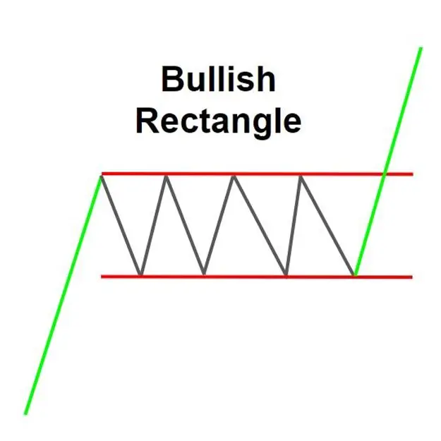

Bullish Rectangle Chart Pattern is a continuation chart pattern that forms during an uptrend.
It shows that the buying and selling pressure is equal and that the direction of the trend
is not likely to change. The pattern is defined by a period of consolidation within a trend,
which is bounded by a parallel support and resistance level.
Traders generally look to enter a long position (buy) after the price breaks above the resistance
level of the rectangle. The rectangle's height can be added to the point of breakout to set a
target for the price move after the breakout.
It's always recommended to look for confirmations with other technical analysis tools
before making a trade decision based on this pattern.
This is a general explanation of a Bullish Rectangle Chart Pattern.
The content on the pages you mentioned may provide more detailed or specific interpretations.